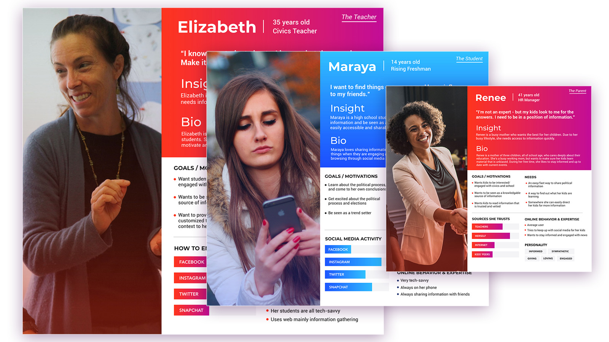
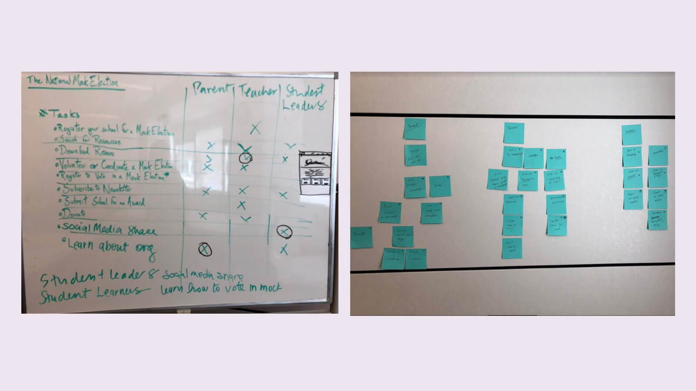
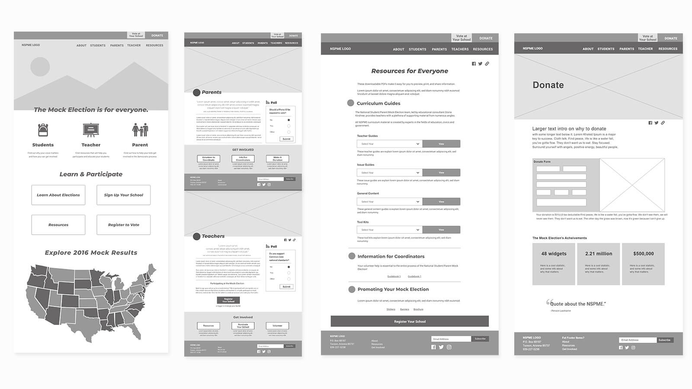
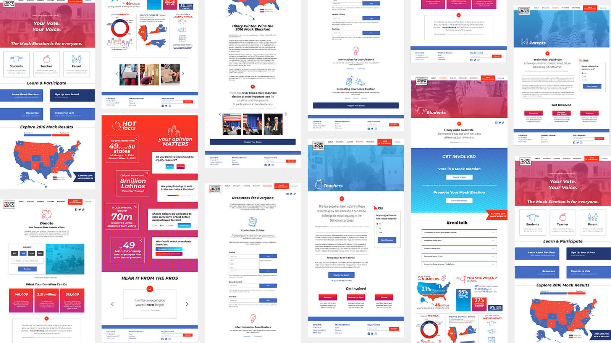

Hanh Nguyen
Alesia Gil Sosa
Alex Valera
Valerie Chou
Lane Goodman
The National Mock Election is a well-recognized student activity across the country, but lacks a strong online presence. Our team conducted user research to inform the proposal of a new structure and style for the organization
The Challenge
The National Student Parent Mock Election (NSPME) was founded in 1980. An estimated 50 million students and their parents have learned more about voting since its creation. While the organization had succeeded in the past without any digital network beyond email, they know that a strong online presence is needed to engage modern youth and users.
The existing mock election site relied on an outdated system, and internal users lacked the ability to manage content effectively.
The Approach
The main goals of our redesign were to:
Simplify content and structure
Increase engagement and site functionality
Prioritize high school students
Create an updated bold new look
Competitive Analysis
Our team researched election, civic engagement, and educational sites for style, content strategy, tone, and social media reach. Our research revealed that most content-heavy sites that attempt to appeal to younger audiences saught to organize their information with wel-structured navigation, engaging imagery and messsaging, and integreation of social media.

We established three user personas from the information provided by user surveys and in-person interviews. I was responsible for creating the personas shown here.
User research
We developed separate surveys for stakeholders and their three ideal user types: teachers, student and parents. With limited name recognition, we also knew our respondants' answers would depend on their knowledge of the organization, and created separate surveys for informed vs. uninformed audiences to preempt this challenge
Through our research, we found that students had often participated in a mock election type process through school and their teachers, but did not always recognize the organization behind the activity. Student online activity was found to be based on sharing links with friends, typically in screenshots or direct messages rather than through "share" links. Finally, students typically don't enjoy reading on websites assigned for school, but instead prefer pictures, video, and other engaging material to capture their attention. Students want to hear an unbiased opinion, and want to make up their own minds.

Our user flows went through multiple iterations, made especially necessary by the integration of a third party site that allows students to vote in a mock election at their school.
The Solution
Structure and Interaction
After analyizing our market research and user surveys, we tackled the navigation and content organization of the site. With such a content-heavy site, we decided to pare down pages to essential information that could lead to user action. We went through multiple iterations of our sitemap and navigation before establishing a more concrete user flow. Tweaking the user flow and examining how user types could interact with the Mock Election helped to solidify the site structure and arrive at a final sitemap.
The final user flow for the mock election site.

Once the actions and flow for the site were established, we developed wireframes for the pared-down site. I focused on the donation experience.
Wireframes and mockups
Our focus on students led us to design a bold, modern site that users would find relevant and informative. Because the client needed students to share content through social media and appeal to younger users, we aimed to make the visuals of the site as approachable and fun as possible. We used bright colors and gradients, which was balanced with plenty of open space. We also integrated gestures and interactions that younger users respond to, like swiping, polls, gifs and interactive maps.

We implemented a bright color scheme and focused on user actions when building out the high-fidelity mockups for the site.
Prototyping
After linking our high-fidelity mockups together in an Invision Prototype, our team coded a MVP version of the site using a NodeJS and Pug backend, creating static components in HTML and CSS. I was primarily responsible for the responsive header and footer. The full MVP site is currently under development.